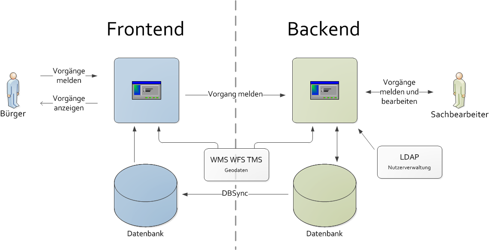
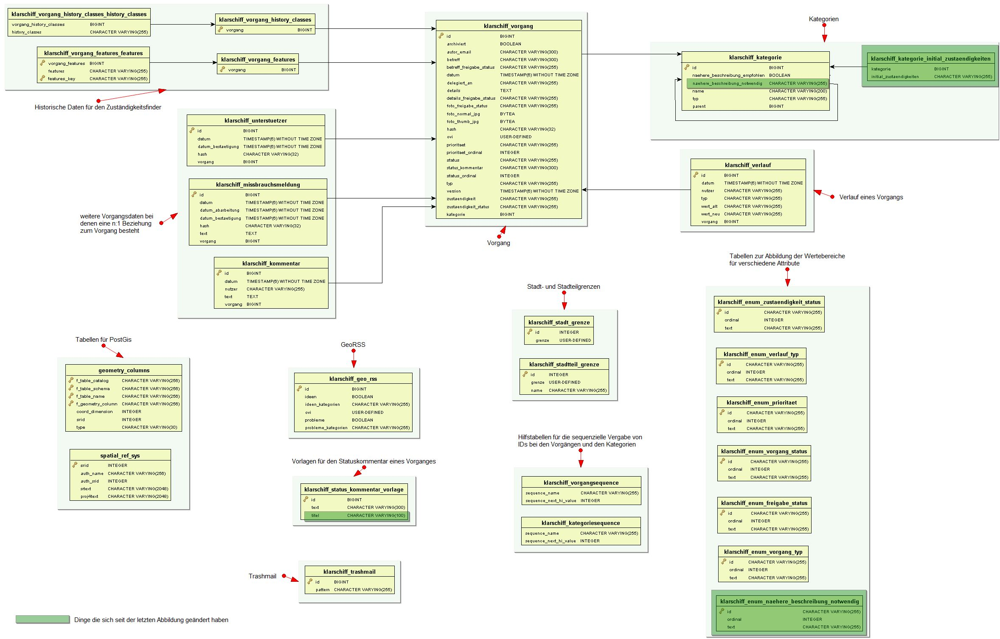

Entwicklerdokumentation
Klarschiff Backend
erstellt von
Änderungsübersicht
| Version | Datum | Bearbeiter | Beschreibung |
| 1.0 | 10.2011 | Stefan Audersch |
Inhaltsverzeichnis
Die Serviceplattform Klarschiff bietet dem Bürger eine einfache und transparente Möglichkeit, die Verwaltung auf Probleme der Stadtentwicklung und der öffentlichen Sicherheit und Ordnung hinzuweisen.
Meldungen sollen mittels Handy oder PC inklusive Foto und exakter geographischer Position erstellt und gemeldet werden können. Bei den Meldungen wird zwischen Problemen und Ideen unterschieden. Dieses sind beispielsweise Meldungen über illegale Müllablagerungen, über Verunreinigungen durch Graffiti, über defekte Straßenlaternen und Ampelanlagen, über demolierte Bänke, über umgestürzte Bäume, über Gefahrenstellen auf Gehwegen, über ungepflegte Grünanlagen usw. Die Meldung solcher Ideen oder Probleme erfolgt für den Bürger sehr einfach, indem er bei der Formulierung und Lokalisierung unterstützt wird.
Die Verwaltung erhält durch die Serviceplattform ein System, in dem Meldungen zentral registriert, verwaltet und bearbeitet werden können. Die Weiterleitung der Meldung an die richtigen Ansprechpartner in der Verwaltung zur weiteren Bearbeitung erfolgt dabei im System automatisch. Externe Dienstleister, zum Beispiel Entsorgungsdienstleister, sind mit dem System ebenfalls angebunden.
Gesamtziel des Projektes ist es, die Bürger aktiver in die Gestaltung des lokalen Lebensumfeldes einzubeziehen, thematisch ähnliche Vorgänge im Sinne einer wachsenden Serviceorientiertheit zentral für den Bürger zu bündeln, Abläufe in der Verwaltung nutzerfreundlicher zu gestalten und die Abarbeitung von Aufgaben innerhalb der Verwaltung weitestgehend zu automatisieren.
Eine Liste der wichtigsten Personen oder Organisationen, die bei der Entwicklung oder bei der Gestaltung begetragen haben.
| Name | Organisation | Rolle | Teilprojekt | Erreichbarkeit |
| Stefan Audersch (sTeFaN) | Fraunhofer IGD | Backend | Chefentwickler, Projektleiter, Userinterface, Gestaltung, Architektur, GIS, Codequalität, Dokumentation | stefan.audersch@igd-r.fraunhofer.de |
| Marcus Kröller | Fraunhofer IGD | Backend | Zuständigkeitsfinder, Fotomanipulation | marcus.kroeller@igd-r.fraunhofer.de |
| Frank Christiner | Fraunhofer IGD | Backend | Userinterface | frank.christiner@igd-r.fraunhofer.de |
| Hani Samara | Fraunhofer IGD | Backend | Userinterface, PDF-Erzeugung | hani.samara@igd-r.fraunhofer.de |
| Stefan Gladisch | Fraunhofer IGD | Backend | Gestaltung | stefan.gladisch@igd-r.fraunhofer.de |
| Martin Gielow | Fraunhofer IGD | Backend | fotomanipulation | martin.gielow@igd-r.fraunhofer.de |
| Detlef Neitz | Hanse- und Universitätsstadt Rostock | Auftraggeber, Projektleiter, Konzept | detlef.neitz@rostock.de | |
| Sebastian Gutzeit | Hanse- und Universitätsstadt Rostock | Konzept | (sebastian.gutzeit@rostock.de | |
| Peter König | WhereGroup | Frontend | Projektleiter, Datensynchronisation | peter.koenig@wheregroup.com |
| Christian Wygoda, Uli Rothstein, Toni Pignataro | WhereGroup | Frontend | Entwickler | christian.wygoda@wheregroup.com, ulrich.rothstein@wheregroup.com, toni.pignataro@wheregroup.com |
Klarschiff wird unter der Open-Source Lizenz Apache License v2.0 entwickelt. Mehr Informationen dazu finden Sie unter http://www.apache.org/licenses/LICENSE-2.0.html.
Klarschiff kann weiterentwickelt werden und zwar nicht nur von den ursprünglichen Entwicklern, sondern auch von anderen Softwareentwicklern, die Interesse daran haben an diesem Open-Source Projekt mitzuwirken.
Darstellung von technischen Randbedingungen, die beim Entwurf und der Entwicklung des Backends beachtet werden mussten.
| Betriebsystem | Linux |
| Plattform | Webanwendung |
| Architektur | Frontend in der DMZ, Backend nur im Intranet der Verwaltung |
| Datenbank | Postgres ab Version 9 mit PostGis |
| vergleichbare Projekte | FixMyStreet, Verbessere die Nachbarschaft(verbeterdebuurt.nl), Dienstleistungsportal der Landesverwaltung in Brandenburg, SeeClickFix |
| Konfiguration | ohne Entwickler-Knowhow |
| Anmeldung | Die Arbeit mit dem Backend kann durch die Sachbearbeiter nur nach einer erfolgreichen Anmeldung erfolgen. |
| Benutzer | < 100 Benutzer in der Verwaltung |
| Vorgänge | < 5.000 Vorgänge pro Jahr |
Darstellung von organsisatorischen Randbedingungen, die beim Entwurf und der Entwicklung des Backends beachtet werden mussten.
| Auftraggeber | Auftraggeber für Klarschiff war die Hanse- und Universitätsstadt Rostock. |
| Aufftragnehmer | Die Entwicklung des Frontend erfolgte bei der WhereGroup und die des Backends beim Fraunhofer IGD. |
| Projektbudget | Für die Entwicklung wurde ein Festpreis vereinbart. |
| Haftung | Das Fraunhofer IGD übernimmt für das Backend keine Haftung. |
| Zeitplan | Endabnahme und Beginn des Betriebes ist im Novemebr 2011 |
| Datenschutz | Bzgl. Dateschutz wurde ein Vorstellung des Projektes und des Konzeptes bei den Datenschutzbeauftragten von Mecklenburg-Vorpommern durchgeführt. |
| Nutzung | Das Entwickelte System von Klarschiff wird als Open Source bereitgestellt |
| Betrieb | Der Betrieb erfolgt innerhalb der Verwaltung. Die Wartung erfolgt nicht über die Entwickler, sondern über einen externen Dienstleister |
Bei der Entwicklung des Backends wurde ein agiler Ansatz gewählt. Hierzu fanden alle 14 Tage ein Projektmeeting statt, hierbei wurden u.a. die neusten arbeiten vorgestell und diskutiert sowei die Aufgaben für die nächsten 14 Tage festgelegt.
| Projektdokumentation | erfolgt über ein Wiki https://wiki.wheregroup.com/klarschiff.hro/ |
| Bugtracing | erfolgt über ein Trac https://trac.wheregroup.com/klarschiff.hro/ |

Abbildung: Nachbarsystem vom Backend
| Frontend für den Bürger | Die Erstellung von Meldungen erfolgt primär durch die Bürger im Frontend. Die dabei entstehenden Daten werden über ein Schnittstelle an das Backend übermittelt. Hier werden diese in die Datenbank eingetragen. Durch eine Synchronisation der Daten auf Datenbankebene kommen die Daten in die Datenbank des Frontends. Im Frontend können die Daten dann entsprechend dargestellt werden. Das Frontend selber kann keine Daten in die Frontenddatenbank schreiben. |
| GIS | Für die Kartendarstellung wird ein von der Verwaltung bereitgestellter WMS, WFS, TMS verwendet werden. Als Koordinatensystem ist EPSG:25833 festgelegt. |
| Benutzer- und Rollenverwaltung | Benutzer- und Rollenverwaltung erfolgt über ein in der Verwaltung vorhandenes LDAP. |
| Name | Beschreibung |
| Java | Zur Entwicklung wird Java ab der Version 6.0 eingesetzt. Hierbei werden auch Generics und Annotations verwendet. |
| JSP/JSPX | Zur dynamischen Erzeugung der HTML-Ausgaben werden JavaServer Pages (Extended) als serverseitige Web-Programmierspreche eingesetzt. Diese erlauben es Java-Code in HTML-Seiten einzubetten. |
| JavaServer Pages Standard Tag Library (JSTL) | JSTL unterstützt bei der Erstellung von JSP-Seiten, indem sie eine Sammlung von Custom-Tag-Bibliotheken zur Verfügung stellen. |
| JSP EL | Eines der primären Eigenschaften der JSP Technologie ist die Unterstützung einer Expression Language (JSP EL). Diese macht einen einfachen Zugriff auf Anwendungsdaten, welche in JavaBean Komponenten gespeichert sind, möglich. |
| HTML | Zur Anzeige der Webseiten wird HTML eingesetzt. HTML dient der Strukturierung von Inhalten wie Texten, Bildern und Hyperlinks. |
| JavaScript | Als Scriptsprache für das DOM Scripting, also den Zugriff auf HTML- und XML Dokumente wird JavaScript eingesetzt. |
| XML | Die Extensible Markup Language (XML) wird zum Austausch von Daten zwischen Computersystemen verwendet. |
Für Klarschiff wird eine Laufzeitumgebung/Servlet-Container benötigt. Hierzu wird der Apache Tomcat ab der Version 7 eingesetzt.
Unter Win7 sollte der Tomcat nicht unter dem Verzeichnis C:\[Programme]\ ausgepackt werden, da bei der Verwendung vom Tomcat ggf. in dem Verzeichnis Schreiboperationen notwendig sind, wofür dann wiederum Adminrechte vorhanden sein müssen.
Für die Entwicklung des Backends wurde das Spring Framework verwendet. Spring ist ein Framework für die vereinfachte Entwicklung von Java EE Anwendungen. Beim Backend wurde sehr viel das Prinzip des Dependency Injection verwendet.
Neben Spring Core wurden die folgenden Spring-Projekte im Backend verwendet:
| Bibliothek | Version | URL | Lizenz | Kommentar | Verwendung |
| Spring Framework | 3.0.5.RELEASE | http://www.springsource.org | Apache License v2.0 | Vereinfachte Entwicklung mit Java/Java EE, Abstaktionsschicht für Transaktionsmanagement, Abstraktionsschicht für JDBC, Integration von Hibernate, Funktionalitäten für AOP, flexibles MVC Web Application Framework | 1 |
| Spring Security | 3.0.5.RELEASE | http://static.springsource.org/spring-security/site | Apache License v2.0 | Framework zur Absicherung von Java-Anwendungen und Webseiten, Zugriff auf LDAP | 1 |
| Hibernate | 3.6.0 | http://www.hibernate.org | LGPL v2.1 | Framework für das Object-Relational Mapping | 1 |
| Hibernate Validator | 4.1.0 | http://www.hibernate.org/subprojects/validator.html | Apache License v2.0 | Definition von Daten-Integritäts- und Validierungsregeln in JavaBean-Klassen mittels Annotations | 1 |
| Hibernate Spatial | 1.1 | http://www.hibernatespatial.org/ | LGPL v2.1 | Erweiterung für Hibernate zur Arbeit mit geographischen Daten | 2 |
| Weka | 3.6.4 | www.cs.waikato.ac.nz/ml/weka | GPL v2.0 | Software-Suite für das Machine Learning und Data-Mining | 1 |
| Geotools | 2.7.1 | http://geotools.org | LGPL v2.1 | Bearbeitung und Darstellung geografischer Daten | 1 |
| Vividsolution (JTS – Java Topology Suite) | 1.1 | http://www.vividsolutions.com/jts/JTSHome.htm | LGPL v3.0 | API für räumliche 2D Funktionen | 1 |
| Apache Directory Server | 1.5.5 | http://directory.apache.org/ | Apache License v2.0 | LDAP Server in Java | 1 |
| commons-beanutils | 1.8.0 | http://commons.apache.org/beanutils/ | Apache License v2.0 | Einfach zu nutzende Wrapper für Reflection und Introspection APIs | 1 |
| commons-codec | 1.4 | http://commons.apache.org/codec/ | Apache License v2.0 | Implementierung geläufiger Encoder und Decoder wie Base64, Hex, Phonetic und URLs | 1 |
| commons-collection | 3.2.1 | http://commons.apache.org/collections/ | Apache License v2.0 | Schnittstellen, Implementierungen und Utilities für Java-Klassen | 1 |
| commons-dbcp | 1.3 | http://commons.apache.org/dbcp/ | Apache License v2.0 | Aushandeln der offenen Datenbank-Verbindungen mit den Benutzern | 1 |
| commons-digister | 2.0 | http://commons.apache.org/digester/ | Apache License v2.0 | Konfiguriert ein XML zu Java-Objekt Mapping-Modul, welches Regeln auslöst wann immer ein bestimmtes Muster aus XML Elementen erkannt wird | 1 |
| commons-filupload | 2.0 | http://commons.apache.org/fileupload/ | Apache License v2.0 | Vereinfachtes Hinzufügen von robusten und hochperformanten Dateiupload-Möglichkeiten für Servlets und Web-Applikationen | 1 |
| commons-httpclient | 3.1 | http://hc.apache.org/httpclient-3.x/ | Apache License v2.0 | Unterstützung für das HTTP Protokoll z.B. für die Methoden GET, POST, PUT | 1 |
| commons-io | 2.0.1 | http://commons.apache.org/io/ | Apache License v2.0 | Bibliothek zur Unterstützung der Input/Output Funktionalitäten | 1 |
| commons-jxpath | 1.2 | http://commons.apache.org/jxpath/ | Apache License v2.0 | Definiert einen einfachen Interpreter der Expression Language Namens XPath | 1 |
| commons-lang | 2.5 | http://commons.apache.org/lang/ | Apache License v2.0 | Extra Methoden zur Manipulation der Core-Klassen von Java | 1 |
| commons-logging | 1.0.4 | http://commons.apache.org/logging/ | Apache License v2.0 | Stellt verschiedene Logging-Implementierungen zur Verfügung | 1 |
| commons-pool | 1.5.4 | http://commons.apache.org/pool/ | Apache License v2.0 | Bietet eine Objekt-pooling API mit generischer Objekt-pool Schnittstelle, einem Toolkit zum Erschaffen modularer Objekt-pools und allgemeinen pool Implementierungen | 1 |
| commons-regex | 0.1 | https://github.com/rodhilton/commons-regex | Apache License v2.0 | Bietet Funktionen zum Einfachen Arbeiten mit Regulären Ausdrücken | 2 |
| PostgreSQL (JDBC4-Treiber) | 9.0-801 | http://jdbc.postgresql.org/ | BSD | Datenbankanbindung für Java-Programme an PostgreSQL Datenbanken | 1 |
| PostGis (JDBC-Treiber) | 1.3.3 | http://postgis.refractions.net/ | GNU v2.1 | Datenbankanbindung für Java-Programme an PostGIS | 1 |
| 1.4.1 | http://www.oracle.com/technetwork/java/javamail-1-4-1-141959.html | CDDL v1.0 | Klassen zum Modellieren eines Mail-Systems | 1 | |
| Aspectjweaver | 1.6.11 | http://mvnrepository.com/artifact/org.aspectj/aspectjweaver/1.6.11 | Eclipse Public License v1.0 | Vorstellen von Ratschlägen für Java-Klassen (Klassen zum Ladezeitpunkt mit AspectJ-Code anreichern) | 1 |
| Servlet | 2.5 | http://www.oracle.com/technetwork/java/javaee/servlet/index.html | Apache License v2.0 | Java-Klassen, deren Instanzen innerhalb eines Java-Webservers Anfragen von Clients entgegennehmen und beantworten | 1 |
| Ehcache (googlecode) | 2.2.0 | http://ehcache.org/ | Apache License v2.0 | Java-basierter Cache zur Leistungssteigerung | 1 |
| Jsp-api | 2.1 | http://java.sun.com/products/jsp/docs.html | Apache License v2.0 | Klassen und Schnittstellen für die JSP Core API | 1 |
| Joda-time | 1.6 | http://joda-time.sourceforge.net/ | Apache License v2.0 | Ersatz für die Java Zeit- und Datums-Klassen mit einfacherer API | 1 |
| flexjson | 2.1 | http://flexjson.sourceforge.net/ | Apache License v2.0 | Bibliothek zum Serialisieren und Deserialisieren von Java Objekten in und aus JSON (JavaScript Object Notation) | 1 |
| JDOM | 1.1 | http://www.jdom.org/ | Apache-style open source license mit entfernter Anerkennungs-Klausel | Java-basierte Lösung zum Zugriff, Manipulation und Ausgabe von XML-Daten aus Java-Code | 1 |
| log4j | 1.2.16 | http://logging.apache.org/log4j/1.2/index.html | Apache License v2.0 | Framework zum Loggen von Anwendungsmeldungen | 1 |
| SLF4J | 1.6.1 | http://www.slf4j.org/ | MIT License | Einfache Logging-Fassade | 1 |
| JUnit | 4.8.1 | http://www.junit.org/ | CPL v1.0 | Framework zum automatisierten Unit-Testen von Klassen und Methoden | 1 |
| Tiles | 2.2.1 | http://tiles.apache.org/ | Apache License v2.0 | Template-Framework zum vereinfachten Entwickeln von Benutzeroberflächen für Weboberflächen | 1 |
| POI | 3.7 | http://poi.apache.org/ | Apache License v2.0 | Java API für Microsoft Dokumente (z.B. Excel) | 1 |
| jQuery | 1.5 | http://jquery.com/ | MIT License oder GPL v2.0 | JavaScript Bibliothek zur Traversierung von HTML Dokumenten, Event Handling und Ajax-Interaktionen von Webanwendungen | 3 |
| jQuery Cookie | http://plugins.jquery.com/project/Cookie | MIT License oder GPL v2.0 | Leichtgewichtiges Plugin zum Lesen, Schreiben und Löschen von Cookies | 3 | |
| jQuery UI Datepicker | 1.8 | http://docs.jquery.com/UI/Datepicker | MIT License oder GPL v2.0 | Konfigurierbares Plugin, welches Datumsfunktionalitäten zur Webseite hinzufügt z.B. anpassen des Datumsformats | 3 |
| OpenLayers | 2.10 | http://openlayers.org/ | FreeBSD | Dynamische Karten für Webseiten mit vielen geografischen Informationen | 3 |
| Tango Icon Gallery | http://tango.freedesktop.org/Tango_Icon_Gallery | Public Domain | Sammlung von Icons, welche für Open Source Software genutzt werden kann | 4 |
1 über Maven eingebunden und in der WAR-Datei enthalten
2 als JAR-Datei im Ordner WebContent\WEB-INF\lib
3 Scripte sind im Ordner WebContent\script
4 einzelne Icons sind im Ordner WebContent\images
Zum aufsetzen der Entwicklungsumgebung für das Backend sind neben der Datenbank PostgreSQL mit PostGIS, einer Java Laufzeitumgebung und einem Servlet-Container Tomcat noch eine IDE notwendig. Als IDE wird die Springsource Tool Suite ab der Version 2.6.x notwendig.
Das Aufsetzen der Entwicklungsumgebung sollte in den folgenden Schritten erfolgen:
1. PostgreSQL herunterladen und installieren
siehe Klarschiff Backend aufsetzen im Administrationshandbuch
2. PostGIS installieren
siehe Klarschiff Backend aufsetzen im Administrationshandbuch
3. Benutzer und Datenbank anlegen
siehe Klarschiff Backend aufsetzen im Administrationshandbuch
4. Datenbank für das Frontend und dblink einrichten (optional)
siehe Klarschiff Backend aufsetzen im Administrationshandbuch
5. Java herunterladen und installieren
siehe Klarschiff Backend aufsetzen im Administrationshandbuch
6. Servlet-Container (Tomcat) herunterladen und auspacken
Zum ausführen der Webanwendung wird ein Servlet-Container wie Tomcat benötigt. Für das Backend wird ein Tomcat ab der Version 7.0 benötigt. Hierbei reicht es ein Archiv von http://tomcat.apache.org/download-70.cgi herunterzuladen und dieses in ein Verzeichnis zu entpacken.
7. SpringSource Tool Suite (STS) herunterladen und installieren
Bei STS handelt es sich um ein Eclipse, welche speziell für die Arbeit mit Spring angepasst ist. Für die entwicklung des Backend wurde ein STS ab der Version 2.6.x verwendet. STS kann unter http://www.springsource.com/products/eclipse-downloads heruntergeladen und muss dann auf dem lokalen Rechner isntalliert werden. Nach der Installation kann STS gestartet werden. Für die Arbeit mit dem Backend sollte ein entsprechender Workspace angelegt werden.
8. Proxy beim STS einrichten (optional)
Benötigt der lokale Rechner zur Kommunikation mit dem Internet einen Proxy, so ist dier beim STS entsprechend einzurichten. Die Proxyeinstellung sind hierbei unter Window > Preferences > General > Network Connections und für Maven unter Window > Preferences > Maven > Installations > settings.xml vorzunehmen. Wie einen Proxy für Maven in der settings.xml einstellt wird, ist http://maven.apache.org/guides/mini/guide-proxies.html zu finden.
9. Encoding einrichten
Damit für die einzelnen Dateien ein richtiges encoding verwendet wird, ist diese beim STS entsprechend einzustellen. Für die Java-Dateien wird das Encoding Cp1252 verwendet. Für alle andere Dateien wird UTF-8 verwendet.
— Testen, ob dieses wirklich notwendig ist --
10. Tomcat registrieren
Der ausgepackte Tomcat ist im STS zu registreren (Window > Preferences > Server > Runtime Environments > Add > Apache > Apache Tomcat v7.0 > ...). Beim tomcat installation directory ist dann das Verzeichnis des ausgepackten Tomcat anzugeben.
11. Git Client einrichten
Das Projekt Klarschiff befindet sich in einem GitRepository. Hierfür ist ein entsprechender Git Client zu installieren. Dier Git Client kann über das Dashboard oder über den Eclipse Marketplace installiert werden.
12. Projekt aus dem Git Repository auschecken
Das Projekt klarschiff.webapp kann nun aus dem Git Repository (https://github.com/klarschiff/backend ausgecheckt werden. Hierzu empfielt es sich zur Git Repository Exploring perpective (Window > Open perspective > Other... > Git Repository Exploring) zu wechseln. Über den Button Clone a Git Repository and add the clone to this view öffnet sich ein Dialog in dem die entsprechenden Eingaben zu erledigen sind.
[TODO:Bild einfügen mit den vorausgefüllten Eingaben und genauer beschreiben]
Das Projekt klarschiff.webapp kann nun ausgecheckt werden.
Hinweis: Nach dem Auschecken fängt die STS sofort an über Maven die notwendigen Java Bibliotheken herunterladen. Dieses kann ggf. lange dauern oder auch mal zum Stillstand führen. Speziell mit den Proxyeinstellungen kann es zu Problemen kommen, die aber nicht immer nachvollziehbar sind. Wenn es zu Problemen kommt, hilft es teilweise STS mal mit dem Taskmanager zu beenden und neu zu starten.
13. Projekt zum Server hinzufügen
Damit das Projekt vom Tomcat ausgeführt wird, ist dieses in der View Server bei einem entsprechendem Tomcat zu registrieren. Der Tomcat muss zuvor in der View hinzügefügt werden (Rechtsclick in die View > New > Server > ...). Beim entsprechendem Tomcat kann nun das Projekt hinzugefügt werden (Rechtsclick auf den Tomcat > Add and Remove ...). Da der Tomcat beim Start ggf. etwas länger braucht (speziell beim ersten mal) sollte hierfür die Startzeit etwas hochgesetzt werden (Doppelclick auf den tomcat > Timeouts).
Die Entwicklungsumgebung ist nun soweit eingerichtet, das mit der Arbeit begonnen und der Tomcat mit der Webanwendung gestartet werden kann.
Die Projektstruktur des Backend sieht folgendermaßen aus:
Abbildung: Projektstruktur
In Verzeichnis src_main befinden sich die eigentlichen Java-Klassen, Konfigurationen, Initialwerte und Excel-Templates. Dabei sind unter context Hilfsdateien zum Zugriff auf den ApplicationContext und den Entitymanager zu finden. In dao sind Klassen (Data Access Objects) zum Zugriff auf die Datenobjekte in der Datenbank. Für die Benennung der Tabellen und Attribute in der Datenbank exisitiert unter repository eine Java-Klasse. Unter service sind die verschieden Serviceklassen zu finden, die im Backend an verschieden Stellen verwendet werden und über den ApplicationContext erreichbar sind. Hierzu gehören Klassen:
classification), cluster), dbsync), geo),image),init),job),mail),poi),security),settings) undstatistic). In tld sind Klassen zur implementierung verschieden Taglibs zu finden. util stellt verschieden globale Hilfskalssen und -funktionen bereit. Im Verzeichnis vo sind die eigentlichen Businessobjekte (POJO) vorhanden, die die eigentlichen Daten enthalten und in der Datenbank abgelegt werden. Unter web sind die verschiedenen Controller und Commands für die Implementierung der eigentlichen Weboberfläche nach dem Model-View-Controller-Prinzip zu finden.
Das Verzeichnis META-INF beinhaltet verschiedene Dateien für die Initialisierung der Datenbank (oviwkt, spring und sql), Templates zur Erstellung von Excel-Dateien (templates) sowie Einstellungen und Konfigurationen. Der eigentliche ApplicationContext wird in spring konfiguriert und lässt sich teilweise über die settings.properties anpassen. Der PersistenceContext ist in persistence.xml und ein Cache zu cachen von speziellen anfragen an das LDAP sowei den WFS sit in ehcache.xml konfiguriert. Die Einstellungen zum Logging sind in log4j.properties festgelegt.
src_test enthält Dateien zum Testen (JUnit, Selenium) verscheidener Funktionen.
Für das Einbinden von Bibliotheken wird Maven verwendet. Die Einstellungen hierzu sind in der Datei pom.xml. Neben den Bibliotheken, die Über des Dependency Management von Maven eingebunden werden (Maven Dependencies) arbeitet das System mit den Standardbibliotheken von Java (JRE System Library), den Bibliotheken des Servlet-Container Tomcat (Apache Tomcat v7.0) sowei mit Bibliotheken, die nicht über Maven bezogen werden konnten (Web App Libraries bzw. WebContent/WEB-INF/lib)
Das Verzeichnis WebContent beinhaltet die eigentlichen Dateien für die Webanwendung. Unter dokumentation sind das Benutzerhandbuch un das Entwicklerhandbuch zu finden. Dieses ist ebnfalls der Ort, wo das JavaDoc hin generiert werden soll. Sämtliche Bilder sind unter images zu finden. Unter script sind die verschiedensten JavaScript-Dateien zu finden. styles beinhaltet die CSS-Dateien für die Layoutdefinition. Unter WEB-INF sind die Definition des WebApplicationContext (spring), verscheidenen Definitionen von Taglibs (tags) und die eigentlichen JSPX- sowie Tiles-Dateien (view) zu finden.
Die Webanwendung des Backends wurde auf der Basis von Spring und Spring MVC entwickelt. Spring MVC stellt hierzu das MVC-Pattern bereit. Dabei wird der Presentation-Layer einer Webanwendung folgendermaßen aufgeteilt:
src_main\de\fraunhofer\igd\klarschiff\vo\...) oder auch spezielle Command-Objekte (src_main\de\fraunhofer\igd\klarschiff\web\..Command), die bei seitenübergreifenden Aktionen verwendet werden. WebContent\WEB-INF\views\..jspx) und teilweise Taglibs verwendet.src_main\de\fraunhofer\igd\klarschiff\web\..Controller zu finden. Die einzelnen Controller werden beim Backend durch die Annotation @Controller beim WebApplicationContext registriert. Die Zuordnung der URLs zu den Controllern erfolgt mit Hilfe der Annotation @RequestMapping.
Für die Sichten wird beim Backend zusätzlich Tiles verwendet, welches die Verwendung von Templates ermöglicht.
Mit der Hilfe von Tiles (http://tiles.apache.org/ ist es möglich Templates bei der Definition von Views zu verwenden. Die Definition der Gesamtseite ist somit aufgeteilt in die Bereiche:
WebContent\WEB-INF\views\_default.jspx oder WebContent\WEB-INF\views\_defaultNoMenu.jspx),WebContent\WEB-INF\views\_menu.jspx), WebContent\WEB-INF\views\_footer.jspx) und Die Konfiguration von Tiles erfolgt in der Datei WebContent\WEB-INF\spring\webmvc-config.xml sowie in diversen view.xml-Dateien im Verzeichnis WebContent\WEB-INF\views\.
Werden innerhalb der Webanwendung Validierungen benötigt, so sind diese i.d.R. in den entsprechenden Command-Objekten zu finden, z.B.:
public void validate(BindingResult result) {
...
assertNotEmpty(this, result, Assert.EvaluateOn.ever, "vorgang.typ", null);
...
}
Die Validierung wird dabei über die Controller initiiert.
@RequestMapping(method = RequestMethod.POST)
public String submit(@ModelAttribute("cmd") VorgangNeuCommand cmd, BindingResult result, ModelMap model, HttpServletRequest request) {
Vorgang vorgang = cmd.getVorgang();
...
cmd.validate(result);
...
}
Zur Nutzung bestimmter Hilfsfunktionen bzw. zur übersichtlicheren Implementierung der Views werden eigene Taglibs und EL Functions verwendet.
Die Implementierungen der Taglibs sind im Verzeichnis WebContent\WEB-INF\tags zu finden. Hier existieren beispielsweise Taglibs für die Darstellung des Fotos, zur Einbindung der Karte, zum Aufbau des Menüs oder zur Darstellung der Vorgangskurzinformationen.
Die Implementierung der EL Functions befindet sich in den Dateien src_main\de\fraunhofer\igd\klarschiff\tld\CommonFunctions.java und src_main\de\fraunhofer\igd\klarschiff\tld\CustomFunctions.java. Die Registrierung der EL Functions erfolgt in der Datei WebContent\WEB-INF\tags\elfunctions.tld.
Das folgende Beispiel zeigt die Anwendung der Taglibs und der EL Functions:
<jsp:root
...
xmlns:fx="http://igd.fraunhofer.de/tags/elfunctions"
xmlns:map="urn:jsptagdir:/WEB-INF/tags/map"
...
>
...
${fx:toHtml(vorgang.details)}
...
<map:thumb
projection="${geoService.mapProjection}"
tmsUrl="${geoService.mapTmsServer}"
tmsLayers="${geoService.mapTmsServerLayers}"
maxExtent="${geoService.mapMaxExtent}"
restrictedExtent="${geoService.mapRestrictedExtent}"
resolutions="${geoService.mapResolutions}"
serverResolutions="${geoService.mapServerResolutions}"
ovi="${vorgang.oviWkt}"
oviMargin="${geoService.mapOviMargin/4}"
cssStyle="height: 200px; width: 100%;"
onClick="${url}"
initOpenLayers="false"
title="Klicken Sie auf die Karte für eine größere Darstellung!"
/>
...
Die verwendeten Icons im Backend basieren zum Großteil auf der Tango Icon Gallery (http://tango.freedesktop.org/Tango_Icon_Gallery ).
Für die Darstellung von Karten zum Darstellen bzw. Einzeichnen des Ortes eines Vorganges wird im Backend die JavaScript-Bibliothek OpenLayers verwendet. Für die Kartendaten wird dabei auf ein TMS der Verwaltung zugegriffen.
Um die Einbindung der Karten in die Sichten zu vereinfachen werden verschiedene Taglibs (siehe WebContent\WEB-INF\tags\map\) verwendet.
Für die Erstellung von Excel-Dateien aus der aktuellen Suche wird die aktuelle Suche im Controller ohne Pagination ausgeführt und das Ergebnis an den PoiService weitergeleitet. Hier wird die Excell-Datei erstellt, die dann als Response gestreamt werden kann.
...
List<Object[]> vorgaenge = vorgangDao.listVorgang(cmd);
HSSFWorkbook workbook = poiService.createScheet(PoiService.Template.vorgangListe, vorgaenge);
response.setHeader("Content-Type", "application/ms-excel");
workbook.write(response.getOutputStream());
...
Für die Darstellung wird an verschieden Stellen JavaScript verwendet. Die Scripte sind im Verzeichnis WebContent\script zu finden. Folgende Bibliotheken werden dabei verwendet:
| Name | Anwendungsgebiet |
| jQuery | diverses (z.B. Typ- und Kategorieauswahl |
| jQuery UI Datepicker | Datumseingabe bei der erweiterten Suche |
| jquery Cookies | Schreiben und Lesen von Cookies beim auf- und zuklappbare Blöcke |
| ObenLayers | Kartendarstellung |
Das Einzeichnen der schwarzen Bereiche auf einem Foto erfolgt auf der Basis von JavaScript (WebContent\script\fotoBearbeitung.js). Hierbei werden schwarze Rechtecke über das Foto gelegt, das Bild wird dabei selber noch nicht geändert. Beim Speichern werden die Koordinaten der Rechtecke an den Controller (src_main\de\fraunhofer\igd\klarschiff\web\VorgangController.java oder src_main\de\fraunhofer\igd\klarschiff\web\VorgangErstsichtungController.java) gesendet. Die Neuberechnung des Fotos erfolgt dann in einem Service (src_main\de\fraunhofer\igd\klarschiff\service\image\ImageService.java), welcher dann leztendlich in der Datenbank aktualisiert wird.
Treten bei der Benutzung der Anwendung Fehler auf, so wird die Anzeige entsprechend umgeleitet (siehe WebContent\WEB-INF\spring\webmvc-config.xml) und vom Controller src_main\de\fraunhofer\igd\klarschiff\web\FehlerController.java verarbeitet. Der Controller schreibt die Fehlermeldungen in die Log-Datei und erzeugt zum Identifizieren eine eindeutige Id. Die Id sowie ggf. auch die Fehlermeldung (je nach Einstellungen in der settings.properties) werden mit Hilfe der View WebContent\WEB-INF\views\fehler.jspx für den Benutzer angezeigt.
src_main\de\fraunhofer\igd\klarschiff\web\VorgangPrintController.java
Muss noch geschrieben werden.
Für die Nutzung der Webanwendung ist es notwendig sich anzumelden. Für die Umsetzung wird Spring Security verwendet.
Grundlage für die Authorisierung, Authentifizierung, Ermittlung der zugelassenen Gruppen und Benutzer ist ein angebundener LDAP-Server. Hierbei kann je nach Konfiguration (siehe Abschnitt LDAP im Administrationshandbuch ) ein LDAP-Server der Verwaltung oder ein eingebundener LDAP-Server verwendet werden.
Die Einstellungen für das LDAP sind in der Datei src_main\settings.properties und src_main\META-INF\spring\applicationContext-security.xml. Neben den Einstellungen existieren im Verzeichnis src_main\de\fraunhofer\igd\klarschiff\service\security verschiedene Java-Klassen, die das Lesen von Informationen aus dem LDAP vereinfachen.
Welche Seiten für welche Benutzer zugänglich sind ist primär in der Datei src_main\META-INF\spring\applicationContext-security.xml definiert.
...
<secure:intercept-url pattern="/login/**" access="permitAll" />
<secure:intercept-url pattern="/"
access="hasRole('ROLE_EXTERN') or
hasRole('ROLE_INTERN') or
hasRole('ROLE_ADMIN')"/>
<secure:intercept-url pattern="/vorgang/delegiert/**"
access="hasRole('ROLE_EXTERN') or hasRole('ROLE_ADMIN')" />
...
Mit Hilfe eines InterceptRequestPathFilter (src_main\de\fraunhofer\igd\klarschiff\service\security\InterceptRequestPathFilter.java) wird die Zugriffsbrechtigung für die einzelnen Vorgänge geregelt.
...
<secure:custom-filter
ref="interceptRequestPathFilter"
after="FILTER_SECURITY_INTERCEPTOR"/>
...
<bean id="interceptRequestPathFilter"
class="de.fraunhofer.igd.klarschiff.service.security.InterceptRequestPathFilter">
<property name="pattern">
<map>
<entry key="/vorgang/(\d*)/" value="zusteandigkeit"/>
<entry key="/vorgang/delegiert/(\d*)/" value="delegiertAn"/>
</map>
</property>
</bean>
...
Hat eine Benutzer keine Berechtigung für eine aufgerufe Seite so wird er automatisch auf die Login-Seite (WebContent\WEB-INF\views\login.jspx) umgeleitet.
Hier ist ein Formular mit der URL /resources/j_spring_security_check definiert. Das Login erfolgt dann mit Hilfe der Funktionen von Spring Security.
...
<secure:http auto-config="true"
use-expressions="true"
access-denied-page="/login?access_denied_error=t">
<secure:form-login
login-processing-url="/resources/j_spring_security_check"
login-page="/login"
authentication-failure-url="/login?login_error=t"/>
<secure:logout logout-url="/resources/j_spring_security_logout"/>
...
</secure:http>
...
Für die automatische Zuordnung einer Zuständigkeit zu einem Vorgang wird im Backend ein Lernalgorithmus verwendet. Der Zugriff auf die Funktionalitäten erfolgt über den Service ClassificationService. Als Lernalgorithmus wird ein Bayessches Netz eingesetzt. Ein Lernalgorithmus wird i.d.R. mit Hilfe einer Trainingsmenge angelernt. Auf dieser Basis kann das Bayessche Netz dann eine Klassifikation durchführen.
Zum Trainieren und Klassifizieren werden dem Lernalgorithmus Tupel bzw. Instanzen bestehend aus verschiedenen Features bereitgestellt. Bei den Features werden im Backend die Kategorie, berechnete Werte (Abstand innerhalb einer Fläche, Abstand zu einer Fläche, Größe der Fläche) auf Basis der Position zu bestimmten Layern im WFS (Bewirtschaftung, Grünfläche etc.) sowie die Zuständigkeit verwendet. Zur Berechnung der Features ist die Klasse FeatureService verantwortlich. Dabei werden teilweise Cachingmechanismen verwendet, um wiederholte Berechnung gleicher Werte zu vermeiden.
Als Trainingsmenge werden im Backend die aktuellsten Vorgänge mit einer akzeptierten Zuständigkeit verwendet. Ist die Trainingsmenge nicht ausreichend, wird die Trainingsmenge um zusätzliche Instanzen erweitert, die sich aus vordefinierten Kategorie-Zuständigkeit-Kombinationen ergeben (siehe src_main\de\fraunhofer\igd\klarschiff\vo\Kategorie.java und src_main\META-INF\spring\applicationContext-init.xml).
Wird bei der Benutzung des Systems eine Zuständigkeit akzeptiert, wird die Trainingsmenge des Lernalgorithmus um die Instanz erweitert und der Lernalgorithmus aktualisiert.
private void updateClassifier(Vorgang vorgang, ClassificationContext ctx) throws Exception {
Instance instance = featureService.createFeature(vorgang, true, ctx);
instance.setDataset(ctx.getDataset());
ctx.getClassifier().updateClassifier(instance);
}
Zusätzlich wir der Lernalgorithmus in periodischen Abständen durch einen Hintergrundjob komplett aktualisiert.
public void reBuildClassifier() throws Exception {
logger.debug("rebuild ClassificationContext");
ClassificationContext ctx = new ClassificationContext();
//Klassifikator neu initialisieren
ctx.setClassifier(new NaiveBayesUpdateable());
//attributes und classAttribut neu initialisieren
featureService.initClassificationContext(ctx);
//Dataset neu laden
ctx.setDataset(new Instances("", ctx.getAttributes(), 0));
ctx.getDataset().setClass(ctx.getClassAttribute());
//Trainingset neu erstellen
Instances trainSet = createTrainset(ctx);
//Klassifikator neu trainieren
ctx.getClassifier().buildClassifier(trainSet);
//neuen context setzen
this.ctx = ctx;
}
Im package de.fraunhofer.igd.klarschiff.service.mail werden Funktionen und ein Service zur Erstellung und zum Versand von E-Mails bereitgestellt. Das package de.fraunhofer.igd.klarschiff.web enthält die Command- und Controller-Klassen.
Muss noch geschrieben werden ;)
Muss noch geschrieben werden ;)
Die Daten aus dem Frontend (neue Vorgänge, Missbrauchsmeldungen etc.) werden zum Speichern bzw. zur Weiterverarbeitung an das Backend übergeben. Hierzu besteht beim Backend eine entsprechende REST-Schnittstelle, die in der Klasse de.fraunhofer.igd.klarschiff.web.BackendController implementiert ist.
URL: ../service/vorgang (POST)
| Paramter | Typ/Wertebereich | optional | Bemerkung |
| typ | String problem oder idee | nein | |
| kategorie | Long | nein | |
| oviWkt | String | nein | Position als WKT |
| autorEmail | String | nein | |
| betreff | String | ja | |
| details | String | ja | |
| bild | String | ja | Bild als Base64 kodiert |
| resultHashOnSubmit | Boolean | ja | legt fest, ob bei erfolgreicher Ausführung der Hash für die Bestätigung zurückgegeben werden soll (default: false) |
Rückgabe bei erfolgreicher Ausführung: leere Rückgabe oder Bestätigungshash + HTTP-RequestCode 200
Fehlermeldungen: „[Fehlercode] - [Fehlermeldung]” + HTTP-RequestCode 500
| Fehlercode | Fehlermeldung |
| 001 | [typ] fehlt |
| 002 | [typ] nicht korrekt |
| 003 | [kategorie] fehlt |
| 004 | [kategorie] nicht korrekt |
| 005 | [oviWkt] fehlt |
| 006 | [oviWkt] nicht korrekt |
| 007 | [autorEmail] fehlt |
| 008 | [autorEmail] zu lang |
| 009 | [autorEmail] nicht korrekt |
| 010 | [betreff] zu lang |
| 011 | [bild] nicht korrekt |
URL: ../service/vorgangBestaetigung
| Paramter | Typ/Wertebereich | optional | Bemerkung |
| hash | String | nein |
Rückgabe bei erfolgreicher Ausführung: HTML-Seite mit Bestätigungstext + HTTP-RequestCode 200
Fehlermeldungen: HTML-Seite mit Fehlermeldung + HTTP-RequestCode 200
URL: ../service/vorgangLoeschen
| Paramter | Typ/Wertebereich | optional | Bemerkung |
| hash | String | nein |
Rückgabe bei erfolgreicher Ausführung: HTML-Seite mit Bestätigungstext + HTTP-RequestCode 200
Fehlermeldungen: HTML-Seite mit Fehlermeldung + HTTP-RequestCode 200
URL: ../service/unterstuetzer (POST)
| Paramter | Typ/Wertebereich | optional | Bemerkung |
| vorgang | Long | nein | |
| String | nein | ||
| resultHashOnSubmit | Boolean | ja | legt fest, ob bei erfolgreicher Ausführung der Hash für die Bestätigung zurückgegeben werden soll (default: false) |
Rückgabe bei erfolgreicher Ausführung: leere Rückgabe oder Bestätigungshash + HTTP-RequestCode 200
Fehlermeldungen: „[Fehlercode] - [Fehlermeldung]” + HTTP-RequestCode 500
| Fehlercode | Fehlermeldung |
| 201 | [vorgang] fehlt |
| 202 | [vorgang] nicht korrekt |
| 203 | [email] fehlt |
| 204 | [email] zu lang |
| 205 | [email] nicht korrekt |
| 206 | [email] wurde bereits für den [vorgang] verwendet |
| 207 | [email] der autor des [vorgang] kann keine unterstützung für den [vorgang] abgeben |
URL: ../service/unterstuetzerBestaetigung
| Paramter | Typ/Wertebereich | optional | Bemerkung |
| hash | String | nein |
Rückgabe bei erfolgreicher Ausführung: HTML-Seite mit Bestätigungstext + HTTP-RequestCode 200
Fehlermeldungen: HTML-Seite mit Fehlermeldung + HTTP-RequestCode 200
URL: ../service/missbrauchsmeldung (POST)
| Paramter | Typ/Wertebereich | optional | Bemerkung |
| vorgang | Long | nein | |
| text | String | nein | |
| String | nein | ||
| resultHashOnSubmit | Boolean | ja | legt fest, ob bei erfolgreicher Ausführung der Hash für die Bestätigung zurückgegeben werden soll (default: false) |
Rückgabe bei erfolgreicher Ausführung: leere Rückgabe oder Bestätigungshash + HTTP-RequestCode 200
Fehlermeldungen: „[Fehlercode] - [Fehlermeldung]” + HTTP-RequestCode 500
| Fehlercode | Fehlermeldung |
| 401 | [vorgang] fehlt |
| 402 | [vorgang] nicht korrekt |
| 403 | [text] fehlt |
| 404 | [email] fehlt |
| 405 | [email] zu lang |
| 406 | [email] nicht korrekt |
URL: ../service/missbrauchsmeldungBestaetigung
| Paramter | Typ/Wertebereich | optional | Bemerkung |
| hash | String | nein |
Rückgabe bei erfolgreicher Ausführung: HTML-Seite mit Bestätigungstext + HTTP-RequestCode 200
Fehlermeldungen: HTML-Seite mit Fehlermeldung + HTTP-RequestCode 200
URL: ../service/geoRss (POST)
| Paramter | Typ/Wertebereich | optional | Bemerkung |
| oviWkt | String | nein | Multipolygon als WKT |
| probleme | Boolean | nein | |
| problemeKategorien | String | ja | |
| ideen | Boolean | nein | |
| ideenKategorien | String | ja |
Rückgabe bei erfolgreicher Ausführung: ID des erstellten GeoRSS + HTTP-RequestCode 200
Fehlermeldungen: „[Fehlercode] - [Fehlermeldung]” + HTTP-RequestCode 500
| Fehlercode | Fehlermeldung |
| 701 | [oviWkt] fehlt |
| 702 | [oviWkt] nicht korrekt |
| 703 | [probleme] fehlt |
| 704 | [ideen] fehlt |
Innerhalb der Applikation stehen verschiedene Services bereit, die verschiedene Funktionen bereitstellen. Die einzelnen Services werden beim Start der Anwendung initalisiert, ggf. miteinander verknüpft und im ApplicationContext bereitgestellt.
Der Service bietet die Funktionalitäten für den Zuständigkeitsfinder.
Mit Hilfe des ScheduledSyncInClusterService wird sichergestellt, das bestimmte Jobs in einem Cluster nich parallel von verschiedenen Clients ausgeführt werden. Hierzu werden die Jobs mit der Annotation @ScheduledSyncInCluster gekennzeichnet. Die Synchronisation der Jobs erfolgt mit Hilfe von Einträgen in der Datenbank.
Muss noch geschrieben werden ;)
Muss noch geschrieben werden ;)
Muss noch geschrieben werden ;)
Muss noch geschrieben werden ;)
Muss noch geschrieben werden und der folgende Text stimmt so noch nicht ;)
In der Klasse src_main\de\fraunhofer\igd\klarschiff\service\init\InitializeService.java erfolgt die Initialisierung der DB mit Werten, welche in der Konfiguration vergeben werden. Hierzu wird ein SQL-Script ausgeführt. Die eigentliche Initialisierung erfolgt dann innerhalb eines Threads in der Klasse InitializeServiceThread.java. Hier werden die Tabellen mit initialen Daten gefüllt. Die Werte für diese Tabellen befinden sich in src_main\META-INF\spring\applicationContext-init.xml. Das Anlegen der Tabellen in der Datenbank erfolgt einmalig beim ersten Start von Klarschiff.
automatische Jobs
Muss noch geschrieben werden ;)
Muss noch geschrieben werden ;)
Excel-Datei erzeugen
Muss noch geschrieben werden ;)
Security
Muss noch geschrieben werden ;)
Muss noch geschrieben werden ;)
Muss noch geschrieben werden ;)
Die Webanwendung nutzt zum persistenten Ablegen der anfallenden Betriebsdaten und Einstellungen die Datenbank PostgreSQL. Die Persistierung in der Datenbank wird in mehreren Schritten realisiert. Auf Anwendungsebene existieren Value Objects (VOs). Dies sind einfache Java-Objekte deren Attribute die Betriebsdaten aufnehmen. Sie befinden sich im Package de.fraunhofer.igd.klarschiff.vo.
Zur Abbildung der Objekte auf konkrete Tabellen in der Datenbank wird der OR-Mapper Hibernate als Implementierung der Java Persistence API (JPA) eingesetzt. Hier wurde der Ansatz gewählt die VOs mit den entsprechenden JPA-Annotationen zu versehen, um die Art der Abbildung festzulegen.
Die Ausführung der Persistierung wird durch die Repository- bzw. DAO-Schicht der Webanwendung realisiert. Im Package de.fraunhofer.igd.klarschiff.dao befinden sich eine mehrere Klassen mit der Endung Dao und der Annotation @Repository im Quelltext. Diese Data Access Objects (DAOs) sind nach Zuständigkeit voneinander abgegrenzt und nutzen das EntityManager-Interface der JPA zur Interaktion mit dem Persistenz-Kontext und somit der Datenbank.
Die Annotation @Repository dient dabei der Auszeichnung als Repository-Objekt bzw. DAO und sorgt für die Instanziierung desselben im Spring-Kontext. Die Einbindung in Controllern oder anderen Services kann daher über die @Autowired-Annotation erfolgen.
Die DAOs arbeiten jeweils isoliert voneinander auf dem Persistenz-Kontext. Die Ausnahme bildet hier die Klasse VorgangDao. Soll ein Vorgang (neu oder geändert) an die Persistenzschicht übergeben werden, wird zunächst geprüft, welche Änderungen am Vorgang-Objekt vorgenommen worden sind. Diese werden in Verlauf-Objekten für den Vorgang gespeichert, das an diesen angehängt wird. Dies wird über die VerlaufDao realisiert, die daher in Abhängigkeit zur VorgangDao steht.
Die Konfiguration der Persistenzschicht erfolgt in drei Dateien. Die persistence.xml enthält allgemeine für JPA, bzw. Hibernate relevante Einstellungen. Die Datei settings.properties enthält die Verbindungsdaten für die Datenbank.
In der applicationContext.xml werden diese Verbindungsdaten für das deklarieren einer DataSource-Bean genutzt.
Muss noch aktualisiert werden ;)

Abbildung: Datenbankschema der Backend-Datenbank
Zur Nutzung nützlicher Hilfsfunktionen bzw. zur übersichtlicheren Implementierung werden Utils verwendet. Diese befinden sich im package src_main/de/fraunhofer/igd/klarschiff/util.
| Util | Beschreibung |
BeanUtil | Zugriff auf ein Property. |
ClassPathResourceUtil | Liest Dateien aus dem Classpath aus. |
Log4jNdcFilter und LogUtil | Hilfsfunktionen für das Logging. |
NumberUtil | Hilfsfunktion zum vergleichen numerischer Werte |
SqlScriptUtil | Hilfsfunktion zum Ausführen von SQL-Scripten in einer Datenbank |
StreamUtil | Hilfsfunktionen zum Arbeiten mit Streams |
StringUtil | Hilfsfunktionen zum Arbeiten mit Strings, z.B Encoding ändern |
SystemUtils | Hilfsfunktion zum Ermitteln der Umgebungsvariablen. |
ThreadUtils | Hilfsfunktion zum auffinden von threads anhand des Namens. |
Die Dokumentation ist mit Hilfe einer Wikisyntax geschrieben worden und befindet sich unter WebContent/dokumentation. Hierbei wurde die Syntax Textile verwendet. In der IDE wird die Arbeit (syntax highlighting, autocompleter, export to html) durch das Mylyn WikiText Plugin welches standardmäßig in der Eclipse IDE vorhanden ist unterstützt.
Die generierten Javadoc liegen im Verzeichnis WebContent\dokumentation\apidoc. Bei der Erzeugung der Javadocs muss dann entsprechend das Zielverzeichnis angegeben werden und unter dem Punkt Extra JavaDoc options ist der Eintrag -encoding Cp1252 -charset UTF-8 -docencoding UTF-8 vorzunehmen, damit die Umlaute richtig dargestellt werden.
Zur Darstellung der Dokumentation im Backend ist die Klasse de.fraunhofer.igd.klarschiff.web.DokumentationController und die JSP-Seite WebContent\WEB-INF\views\dokumentation.jspx verantwortlich.
Einige von den oberen Abschnitten sind noch nicht vollständig. zudem fehlen zu den folgenden Punkten teilweise noch ein paar Informationen: